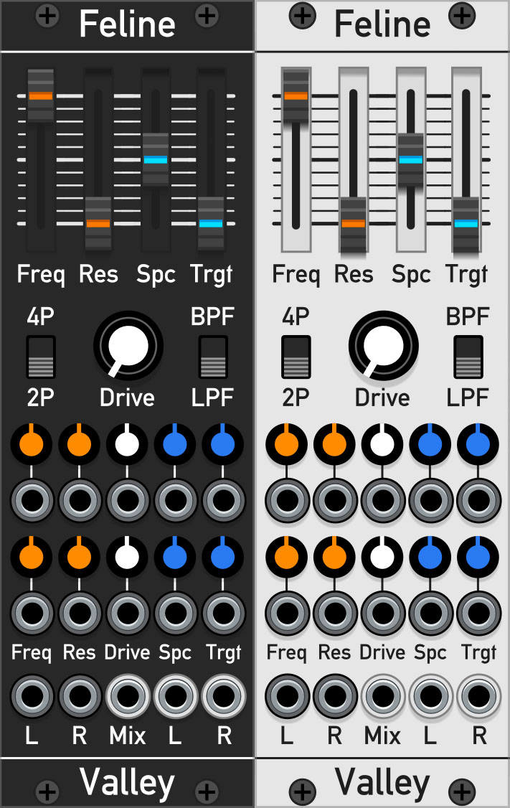

Feline
A stereo filter that can really meow

Feline is a stereo version of the filter section from Interzone. To take advantage of the stereo feature, the cutoff frequency for each channel can be offset from each other by up to ±1 octave. This allows for interesting stereo phasing effects, and if the Mix output is used, Feline can generate vowel-like tones.
Contents
User Guide
All of the controls on Feline have CV inputs available allowing for full automation of all parameters.
Controls
- Freq: Base cutoff frequency for each filter channel.
- Res: Filter resonance.
- Spc (Spacing): Offsets the cutoff frequency of each filter channel from the base cutoff by ±1 octave.
- Trgt (Target): Sets which filter channel will be offset by Spc. At 0% only the right channel is offset, and at 100% both are offset in opposite directions.
- 4P / 2P Switch: Number of filter poles, either 2 or 4, or -12dB or -24dB per octave.
- LPF / BPF Switch: Filter pass band type, either Lowpass (LPF) or Bandpass (BPF).
- Drive: Filter input drive. Boosts the input signals in order to over-drive the filter.
- L and R: The Left and Right audio inputs of the filter. If only one input is connected, the signal is copied over to the other unconnected channel.
- Freq CV: CV input that sets the base cutoff frequency.
- Res CV: CV input that controls the filter resonance.
- Drive CV: CV input that controls the filter input drive.
- Spc CV: CV input that controls each filter channel cutoff spacing.
- Trgt CV: CV input that controls each filter cutoff spacing target.
Outputs
- Mix: Sum output of the left and right filter channels. Use this to create intersting vowel like sounds when changing the cutoff spacing.
- L and R: Left and right output of filter. Cool stereo phasing effects can be made when the filter cutoff spacing is modulated.